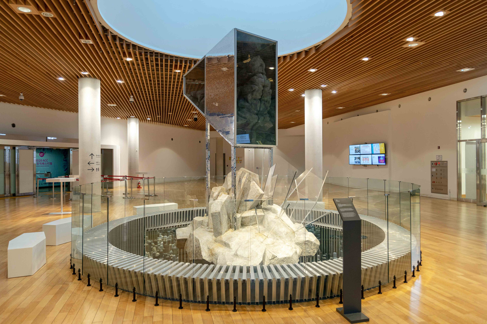

Visit Location
The museum is located at:
1 Museum Of Science Driveway,
Boston, MA 02114
USA
Admission
The entrance is free for all. There are guided tours of the museum that leave every hour. These tours are 70NOK per person and include a handy printed guide to the museum. If you would like to organize a guided tour for your group of 6 or more people, please contact us to arrange the tour.
Opening Hours
Monday: Closed
Tuesday: 10:00-16:00
Wednesday: 10:00-16:00
Thursday: 10:00-16:00
Friday: 10:00-19:00
Saturday: 9:00-16:00
Sunday: 9:00-13:00
Accessibility
The museum has wheelchair accessibility ramps. It also has audio guides and braille display signs for the visually impaired
Food and Drink
There is a cafe attached to the museum where you can get light lunches, soft drinks, coffee, snacks and more.
Shop
Our shop offers a range of memorabilia from the museum as well as great gifts and activity packs that allow you to continue to explore science even after you've left the museum.